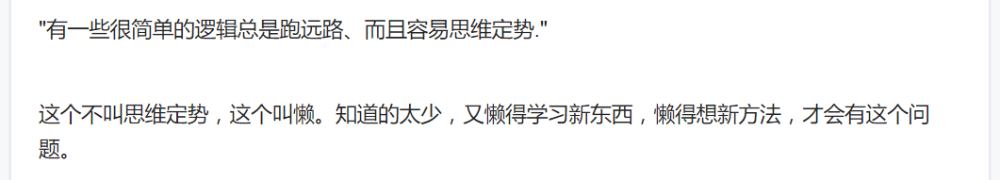

- fatal: Unable to create ‘D:/xxxxx/.git/index.lock’: File exists.
删掉index.lock即可 - fatal: unable to stat ‘xxx/xxxx/xxxx’: Filename too long
git config --system core.longpaths true
[css学习笔记] w3c标准
首先，How to Read W3C Specs。里面有一句话是这样的，
A SPECIFICATION IS NOT A USER MANUAL
翻译为中文也就是规范不是用户手册，我想了很久要怎么去理解这句话，规范不就是文档吗？而文章里面举了一个例子，把这两者分别比喻为车的用户手册和维修手册，然后我就更懵逼了（掩脸..）可是我有时候就是很钻牛角尖想要去字斟句酌，之后随着我学习w3c规范的过程，我好像对此有了一点自己的理解，如若不对，还请指教。
什么是w3c？为什么需要W3C标准
w3c,World Wide Web Consortium,中文名为万维网联盟。与其说w3c生产标准，不如说它是一个调和各方互联网“势力”间开发矛盾以促进万联网发展的论坛或者监督平台：w3c以工作组的方式，把某项技术的相关各方聚集起来并由它们来产生标准。实际也是为了开发可以更好的兼容各大平台，各大浏览器有了w3c标准可以遵循，那么开发者无需写不同版本的代码以兼容不同的浏览器和就算出现新设备平台也无需太大动干戈。而制定规范的人基本上却不是W3C的工作人员编写完成的人，比如06年的时候，W3C css工作组共有98名成员，而只有5名(即占5%)W3C工作成员，其余绝大多数来自于浏览器厂商、主流网站、研究机构、常规技术公司和一些特邀专家等，他们根据自己所处的不同行业维度来对这项技术制定标准，而这些标准的制定的进程都可以在W3C的IRC服务器上实时记录,大多数的讨论都发生在工作组的邮件列表中，即W3C Public Mailing List Archives,所有人都可以对其提出自己的建议，详情可以看W3C f&q。规范不是用户手册？
标准会告诉你这些是什么，要怎么规范地运用，可是它不会告诉你什么情况要使用什么。
其实，世界有很多各种各样的编程语言，日后更会出现更多，而我们需要的形成自己的编程思想，而不是仅陷于某种问题的某种解决方法。而很多时候，或许是出于实用性或者略有点急功近利，遇到问题我们总是会机械地到处去寻到解决方法，找到了之后不久又重蹈覆辙，但从来不知其所以然。我接触的编程语言少之又少，可是我有这样的感觉就是代码可以创造无限的可能，它不是专门创造出来解决某种特定的问题的，而是要思考它为什么可以这样，而首先是要深入充分了解它的特性才能让它发挥它最大的用处和挖掘它更多的可能性。用户手册会告诉你已经制定好的用法说明，规范只是开发的基础，让你了解这门语言最基本的内容，而重点在于接下来你怎么使用它创造更大的价值。
关于编程思想，我还不敢妄言它是什么，之前搜编程思想的时候看到这个程序员如何掌握编程思想? - 知乎 不过太高深的看不懂，倒看懂了这个
关于css版本
在W3C官网上有着各种版本，还参杂着各种未确定的提案草案，尽管它已经作了尽可能明确的注释，不过对于我这种顶多用来应对考试的英语水平，还是很懵逼的。之后根据参与CSS的W3C规范编写的特邀专家之一的Lea Verou的一本书前言和官网上一些资料了解到，直至CSS2是以版本号命名的(如CSS 1和现在的CSS 2.2) ，但继CSS2之后发现CSS的发展之大已经无法把它全部塞在某一个规范里面了，所以他们决定把CSS分模块写规范，各模块都可以独立更新版本(level)，而这些年它们都在以不同的更新速度在推进，因而这时候已经无法简单用CSS3、CSS4来划分CSS规范了，所以我们常说的CSS3，实际上并没有在任何规范中定义过。
其中，如果是延续CSS2.1已有特性的模块，在该模块的版本号将直接升级为level 3，比如- CSS语法http://w3.org/TR/css-syntax-3
- CSS层叠与继承http://w3.org/TR/css-cascade-3
- 选择符http://w3.org/TR/selectors
如果是一些模块是新的概念，那么版本号则直接从level 1开始 - CSS变形http://w3.org/TR/css-transforms-1
- CSS遮罩http://w3.org/TR/css-masking-1
参考文献
- [1] [希]Lea Verou.CSS揭秘[M]
- [2] How to Read W3C Specs
- [3] W3C
- [4] 如何让您的网站符合W3C标准
- [5] CSS future – the state of CSS standardization in 2015
- [6] CSS Snapshot 2017
[css学习笔记]行内元素和其marigin、padding
[ 写在前面 ] 一直以来都没有系统的学过css，对于行内元素很多的认知都是做项目的时候遇到bug然后从网络上各种七零八落的总结上获得的，之前在网上看到w3cschool教程等上面的介绍都很简略，而没有一些更深层的标准化定义。在之前准备工作室交流会的资料的时候，对于行内元素有关的概念和计算总觉得模糊，而在这次翻找W3C规范的过程中，对其终于也有了一些自己的理解。
鉴于有些概念不知道用怎样的中文名比较恰当，所以下面的有些专业名词我直接使用英文了~行内级元素(inline-level elements)
行内级元素是那些不会为自身内容形成新的块，而让内容分布在多行中的元素。行内级元素由以下两类元素组成，一种是em、strong、span、a、img、ul、ol、li等常见行内元素，一种是由display属性为’inline’, ‘inline-table’, and ‘inline-block’转换而形成行内级元素。其中，行内元素又分为可置换元素(replaced elements)和非置换元素(non-replaced elements)
可置换元素
An element whose content is outside the scope of the CSS formatting model, such as an image, embedded document, or applet. For example, the content of the HTML IMG element is often replaced by the image that its “src” attribute designates.
可置换元素即是浏览器可以通过元素的标签类型和属性来决定元素具体显示的内容，比如
<input type="text">显示的是一个输入框，可是如果把text改为radio,则会显示一个单选框。(x)html中的img , input , textarea , select , object都是置换元素，audio和canvas在某些特定情形下为置换元素。使用CSS的content属性插入的对象是匿名置换元素。- 可置换元素不受CSS视觉格式化模型控制，CSS渲染模型并不考虑对此内容的渲染，且元素本身一般拥有固有尺寸（宽度，高度，宽高比）的元素，同时我们也
- 可对其设置
width和height(比如img)。 设置padding-top、margin-top、margin-bottom对其均无效padding和margin都会影响可置换元素行高，即会影响inline box高度，继而影响line box，即会撑开父元素
内容区高度值 =padding-top+padding-bottom+margin-top+margin-bottom+height。padding-left/right和margin-left/right对行内元素的有效
非置换元素
除去可置换元素之外的行内元素- 不可以设置
width和height，对于高度的计算基于框内内容的高度(字体的大小)，并仅能通过设置line-height参与高度的计算。 设置margin-top、margin-bottom、padding-top和padding-bottom对非置换元素无效padding不会影响非置换元素行高(但设置背景颜色可以看到padding)，即对inline box的高度无影响，也就不会对line box产生影响，也就不会撑开父元素padding-left/right和margin-left/right对行内元素有效
- 不可以设置
[注]：button不是行内元素，是可变元素（具体概念还没有在文档中找到），会根据上下文来决定他是一个块元素还是行内元素。除了button，还有下列可变元素
- applet - java applet
- utton - 按钮
- del - 删除文本
- iframe - inline frame
- ins - 插入的文本
- map - 图片区块(map)
- object - object对象
- script - 客户端脚本